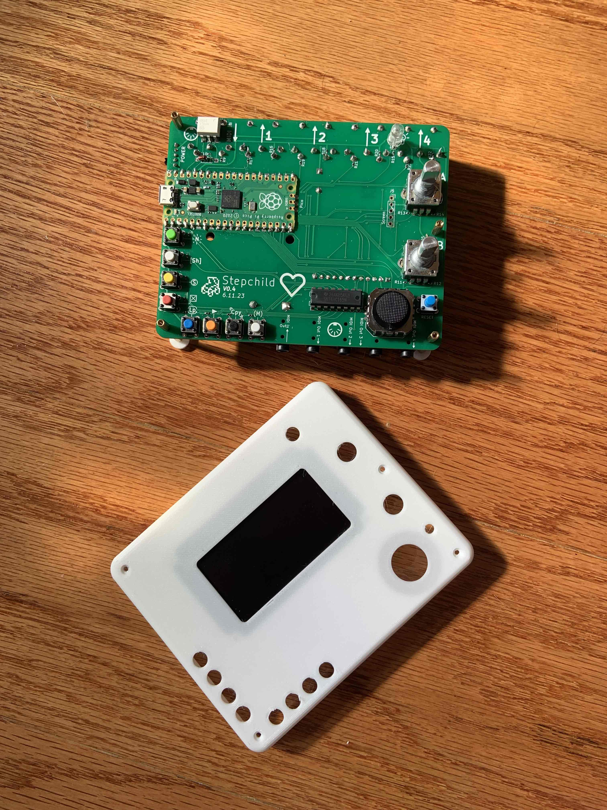
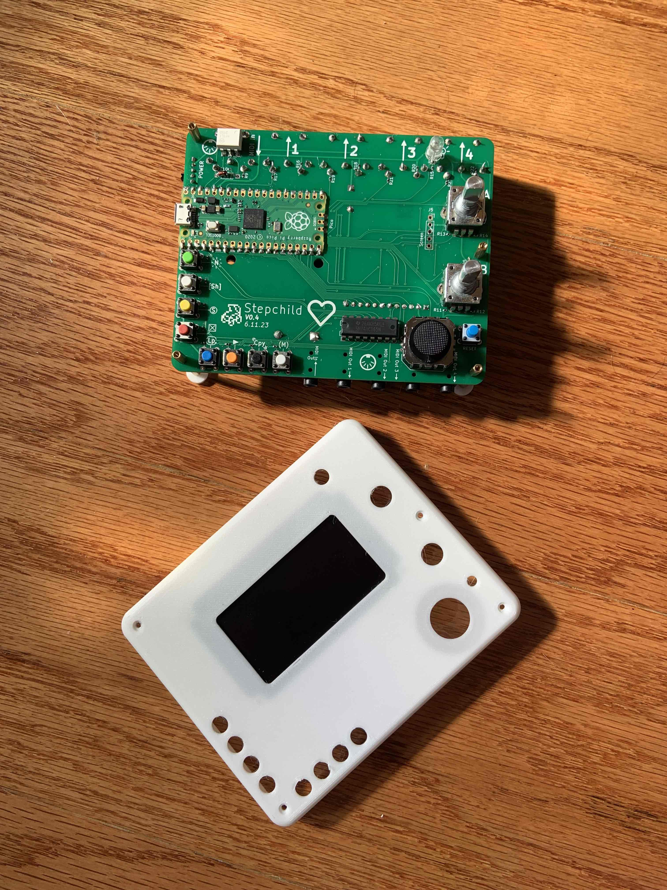

hey
The Stepchild is a project I began while writing music with my SP404MKii. At the time, the MKii had
no actual sequencing capabilities aside from playing back a live-recorded pattern, which gave it a very
unique set of limitations. Sometimes these limitations were and still are really fun, but as it became my main instrument outside of my
laptop I wanted to be able to dig into it deeper.
Technical Details
I/O
5 Separate Hardware MIDI Out Ports (1 USB MIDI Out, 4 5-Pin-DIN Jacks and 4 TRS Jacks)
2 Separate Hardware MIDI In Ports (1 USB MIDI In, 1 5-Pin-DIN Jack and 1 TRS Jack)
3 CV Eurorack TRS Jacks
Hardware
2 Push Encoders, 16 Push Buttons, 8 LEDs, Analog Joystick
2.5" 128x64 monochrome OLED screen
5V USB power and/or 3 AA Batteries
3D printed hand painted housing
Software
Arpeggiator
X custom generative MIDI instruments
CC Data Autotracks (for sending arbitrary waveforms as CC data)
Program Change sequencer
 
